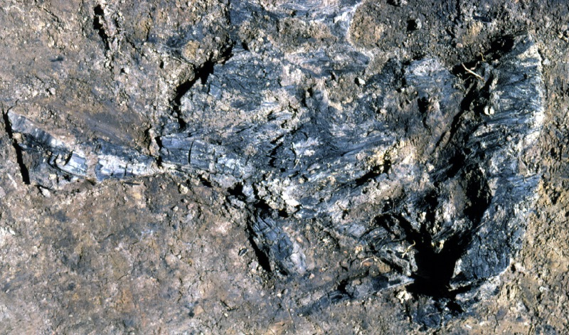
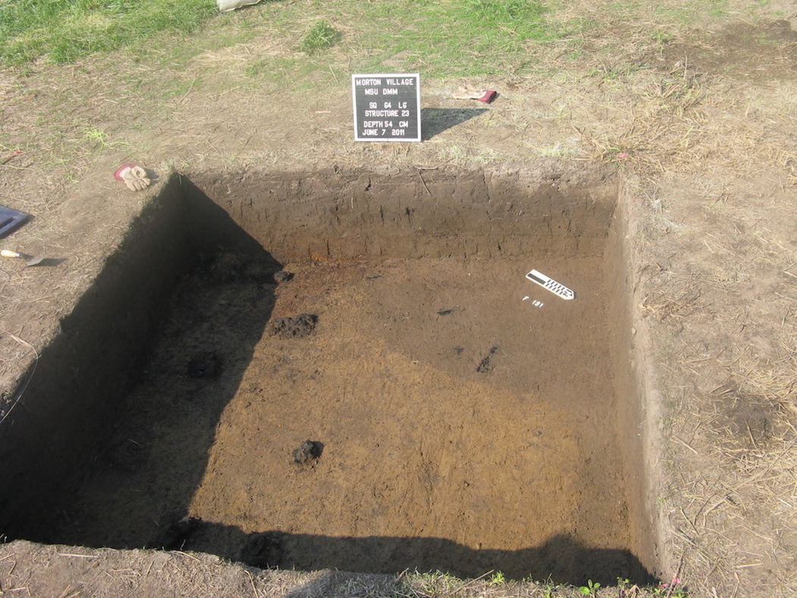

{kind=link}
{kind=link}

contact us
Questions? Comments? Please Contact Us!
Michigan State Univeristy
Department of Anthropology
355 Baker Hall
East Lansing, MI 48824
@MortonVillage
Paleoethnobotany is the archaeological analysis of the relationships between people and plants. Specifically, paleoethnobotanists focus on how plants were used by people, including, as food, clothing, and housing material. By understanding what these plants were used for, we can understand the cultural processes for procuring, producing, and managing botanical resources; i.e. what the plants meant to past populations. Botanical or plant remains include charcoal (burned wood), corn, nuts, and seeds found during excavations. Although there may not be a paleoethnobotanist at our excavation every day, we save all plant materials for future analyses. Usually, if we find a particularly interesting botanical remains we will send the material to a paleoethnobotanist for analysis.
One of the most regularly found artifact is charcoal, which is wood that has been carbonized (burned) and preserved in the archaeological contexts; Feature 191 contained multiple large pieces of charcoal, including 7 charcoal logs found in the first 10-cm level of excavation, weighing a total of 27.4 grams. One possible interpretation of finding these large pieces of charcoal is that this pit was used as a hearth, likely for cooking.
